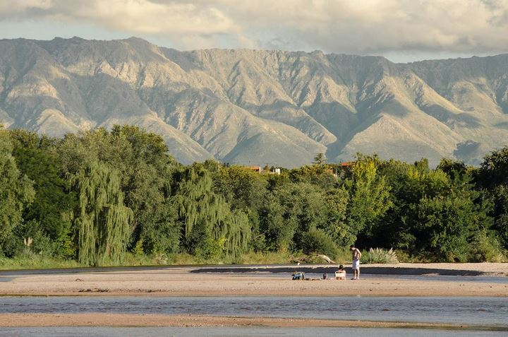

Camintas, ciclismos y senderos
Mina Clavero invita a disfrutar de los paisajes serranos.

Sus Rios
Tanto en Mina Clavero como sus alrededores.
El centro urbano mas importante
La variedad en oferta hotelera y gastronómica hacen de la ciudad un destino para todos los gustos